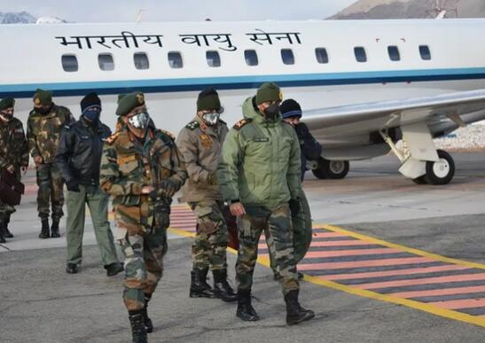

综合印度媒体23日报道，在中印边境对峙“局势持续紧张”的情况下，印度陆军参谋长纳拉万（MM Naravane）周三抵达列城（印度所谓“拉达克地区”），视察印度陆军第14军（ 别称， 火力与狂怒军团Fire and Fury Corps）。

纳拉万在列城的一个印军空军基地接见了PGK Menon中将和其他陆军军官。报道指出，陆军中将PGK Menon在10月份成为了第14军的新指挥官。
印媒Times Now新闻网报道称，自5月以来，中印在列城东部实控线附近的对峙活动持续。
为了缓和紧张局势，两国举行了几轮军事和外交层面的会谈，但迄今尚未取得任何具体成果。